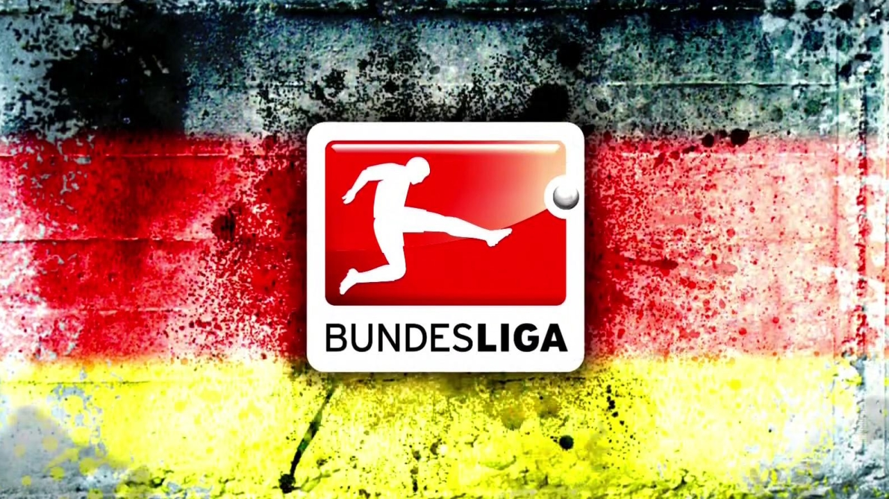

<div class="container">
    <p>
        The Fußball-Bundesliga (English: Football Federal League), commonly known as the Bundesliga, is a
        professional association football league in Germany and the football league with the highest average stadium
        attendance worldwide. At the top of the German football league system, the Bundesliga is Germany's primary
        football competition. The Bundesliga is contested by 18 teams and operates on a system of promotion and
        relegation with the 2. Bundesliga. Seasons run from August to May. Most games are played on Saturdays and
        Sundays, with a few games played during weekdays. All of the Bundesliga clubs qualify for the DFB-Pokal. The
        winner of the Bundesliga qualifies for the DFL-Supercup.
    </p>
    <p>
        A total of 53 clubs have competed in the Bundesliga since its founding. FC Bayern Munich has won the
        Bundesliga the most, winning the title 23 times. However, the Bundesliga has seen other champions with
        Borussia Dortmund, Hamburger SV, Werder Bremen, Borussia Mönchengladbach and VfB Stuttgart most prominent
        among them. The Bundesliga is one of the top national leagues, currently ranked 3rd in Europe according to
        UEFA's league coefficient ranking, based on recent European performances. The Bundesliga is the number one
        football league in the world in terms of average attendance; out of all sports, its average of 45,134 fans
        per game during the 2011–12 season was the second highest of any sports league in the world. The Bundesliga
        is broadcast on television in over 200 countries.
    </p>
    <p>
        The Bundesliga was founded in 1962 in Dortmund and the first season started in 1963. The structure and
        organisation of the Bundesliga along with Germany's other football leagues have undergone frequent changes
        right up to the present day. The Bundesliga was originally founded by the Deutscher Fußball-Bund (English:
        German Football Association), but is now operated by the Deutsche Fußball Liga (English: German Football
        League).
    </p>
</div>
